01开始之前
先确认三件事：用哪个地址、用哪个账号、用哪个浏览器。
访问地址
| 设备 | 地址 | 说明 |
|---|---|---|
| 电脑 | https://www.test.com/majiangapp/ |
大屏、鼠标操作，功能最全（规则模板、皮肤管理只在电脑端） |
| 手机 | https://www.test.com/mjmobile/ |
牌桌为横屏布局，竖屏会提示把手机横过来 |
示例网址：上面表格里的
www.test.com 只是示例域名，不是真实访问地址。实际要用的域名与端口以本家庭的部署情况为准——请向管理员确认，或查看部署文档 部署.md / 运维与备份.md（路径部分 /majiangapp/ 与 /mjmobile/ 一般不变）。
账号从哪来
- 账号是手机号，可以自己注册（需要账号服务开启自助注册），也可以请家庭管理员开好再告诉你账号密码。
- 同一位家人只需要一个账号；电脑和手机用同一个账号登录，登录状态互不影响。
- 每个账号可以属于多个家庭，在大厅顶部切换当前家庭，牌桌与战绩跟着家庭走。
建议浏览器：手机端请用系统自带浏览器、Chrome、Edge 或 Safari（微信内打开如果出现排版异常，请选「在浏览器中打开」）。电脑端 Chrome / Edge 均可。
02注册账号
在登录页点「注册一个」，或用地址 /majiangapp/register 直达。
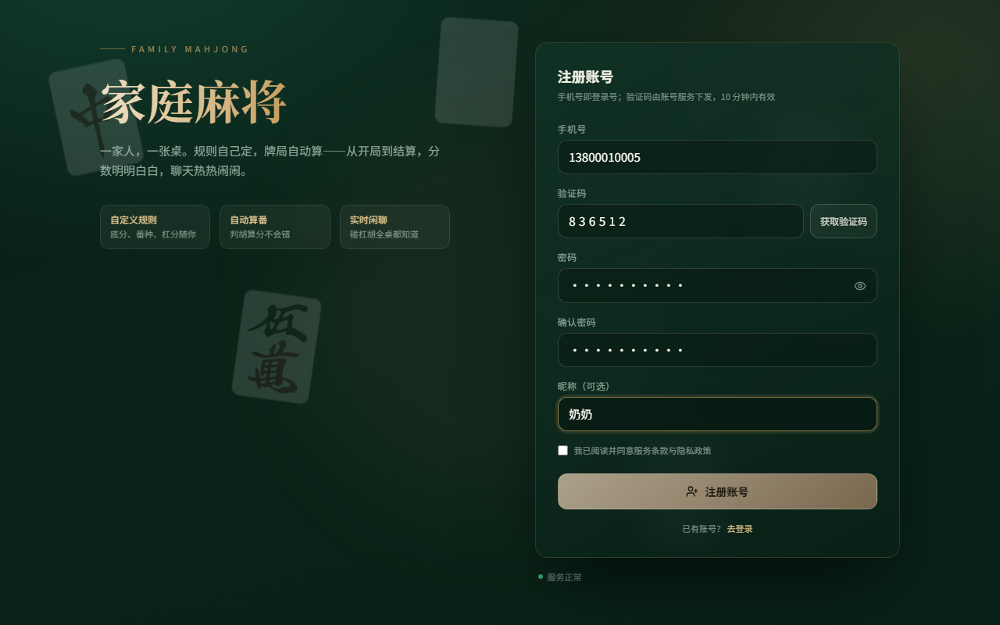
- 填手机号（11 位），点右侧「获取验证码」。
- 填收到的 6 位数字验证码；没收到就等倒计时结束再点一次。
- 设置密码（6-32 位，不含空格），再输一次确认。
- 填昵称（可选，牌桌上显示的就是它，比如「奶奶」）。
- 勾选同意服务条款，点「注册账号」；成功后会自动回到登录页并带好账号。
如果看到「注册未开放」，说明当前环境关闭了自助注册，请联系家庭管理员开通，或让管理员在家庭成员页按手机号把人加进来。
03登录
手机号 + 密码，一步进大厅。忘记密码走「忘记密码」两步验证重设。
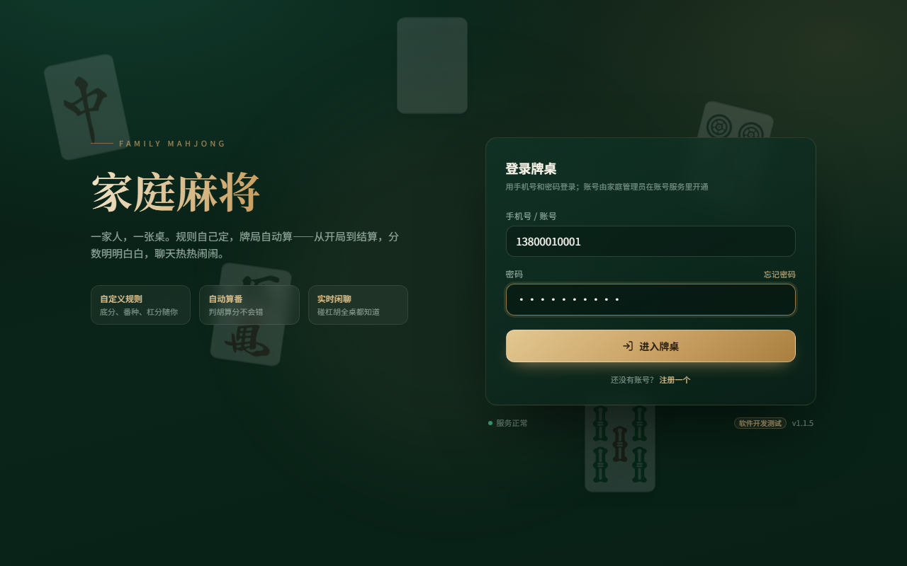
- 输入注册时的手机号与密码，点「进入牌桌」。
- 登录成功后进入大厅；密码记不住就点密码框右侧的「忘记密码」。
- 页面底部显示服务正常与版本号（如
v1.1.5），版本号对不上说明浏览器缓存了旧页面，刷新一下即可。
电脑和手机通用：同一域名下登录状态是共享的。电脑登录过，手机打开会直接进大厅，不用再输一次密码。
04大厅与进桌
大厅是每次上线的落脚点：家里有哪几桌、邀请码在哪填，都在这一页。
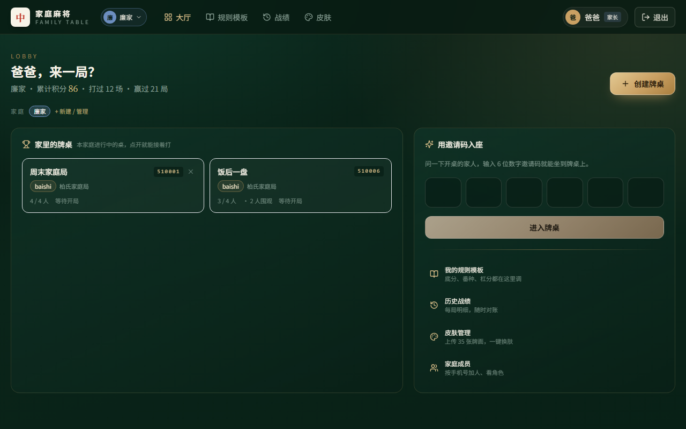
三块内容
- 顶部问候与战绩：累计积分、打过几场、赢过几局；下面的家庭标签可以切换家庭。
- 家里的牌桌：显示桌名、6 位房号、规则、人数、围观数。点卡片整块都能进桌；房主还会多一行「我是房主，关闭这桌」。
- 用邀请码入座：问开桌的人要 6 位数字，逐格填或直接粘贴整串，填满 6 位会自动校验并进桌。
两种进桌方式
| 方式 | 怎么做 | 适合 |
|---|---|---|
| 从列表点进去 | 在大厅「家里的牌桌」里点要进的那一桌 | 本家庭成员，桌子就在眼前 |
| 凭邀请码 | 在右侧 6 格里填邀请码，点「进入牌桌」 | 别人把房号发给你、或不是同一个家庭 |
座位坐满时仍可以进桌围观：牌桌只显示被围观那一家的手牌，随时可以等有人离桌再入座。别人家的牌桌，进桌需要房主在牌桌上点头同意。
05开一桌
点右上角「创建牌桌」，选好规则和圈数就能开局；本局开打后规则不再变动。
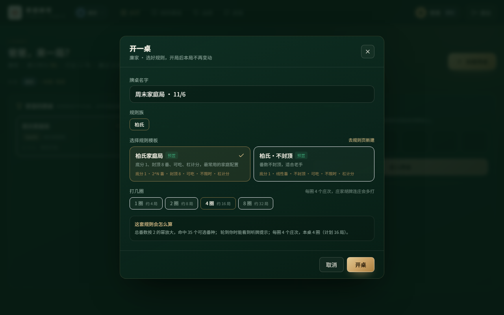
- 牌桌名字：默认「周末家庭局 · 日期」，可以改成「饭后一盘」之类，方便家人认。
- 规则族：家庭常用的那一族会默认选中（如「柏氏」）。
- 规则模板：点一张卡片选中，卡片上直接写着底分、封顶、可不可吃、是否限时、杠是否计分。
- 打几圈：1 / 2 / 4 / 8 圈，每圈固定 4 个庄次（庄家连庄会多打），选 4 圈约 16 局。
- 看一遍底部「这套规则会怎么算」，确认无误后点「开桌」。
开桌成功后你会直接进入牌桌，并把 6 位房号发给家人（牌桌顶部点房号可复制）。开桌的人就是房主：房主可以设限时、按开始、结束牌局，也可以不进屋直接在大厅关掉这桌。
规则族显示「未就绪」时不能开桌，需要先在电脑端「我的规则模板」里把这套细则配置好。
06入座与开局
四个人到齐、都点过「我准备好了」，房主按下开始，牌局才真正开打。
等人阶段
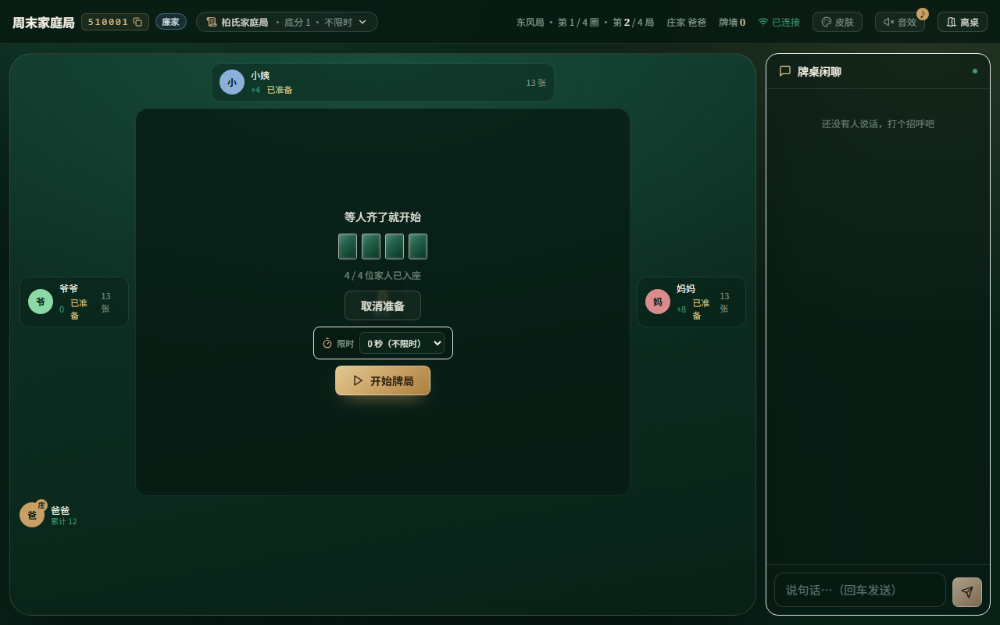
- 进桌后自己先点「我准备好了」（再点一次可以取消）。
- 房主多两个控件：出牌限时下拉（0 秒 = 不限时，家里人打牌推荐不限时）与「开始牌局」。
- 没坐满 4 人时「开始牌局」是灰的，需要等家人进桌。
- 座位已满还进桌的人自动成为围观，只跟着某一家的视角看牌。
开局后的牌桌
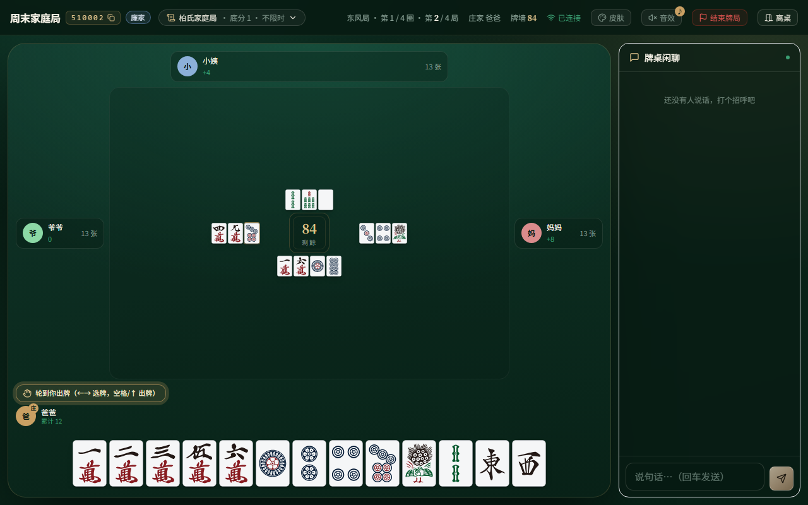
| 位置 | 看什么 |
|---|---|
| 顶部左 | 6 位房号（点一下复制）、桌名、当前家庭的规则摘要 |
| 顶部中 | 东风局 · 第几圈 · 第几局、庄家是谁、牌墙还剩多少张 |
| 顶部右 | 连接状态（已连接）、皮肤、音效、结束牌局（房主/管理员）、离桌 |
| 四角座位 | 昵称、庄家徽标「庄」、本局与累计得分、手牌张数、副露 |
| 中央牌河 | 各家打出的牌，中间方块是牌墙剩余，最后一张牌会高亮 |
| 底部手牌 | 自己的 13 张 + 摸到的第 14 张（单独摆在右侧） |
出牌
- 轮到你时，手牌上方出现金色提示「轮到你出牌」。
- 键盘：← → 移动选择，空格 或 ↑ 打出。
- 触屏/鼠标：点一张牌选中，再点一次打出（选错了再点别的牌改选）。
07吃
吃是「上家打的牌 + 自己手里两张」凑成一副顺子。只有下家能吃上家的牌。
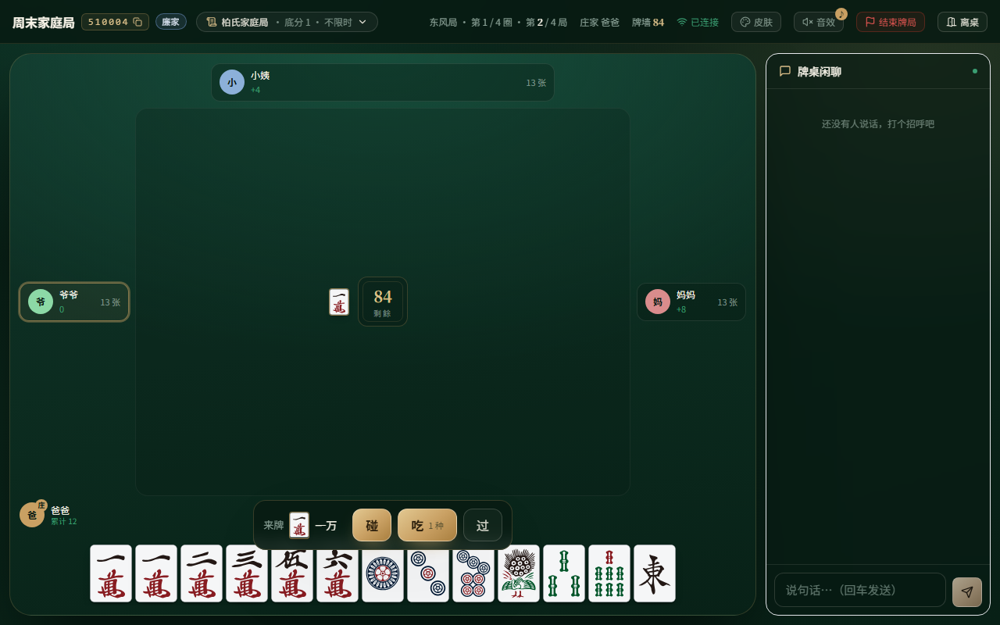
点「吃」不会立刻吃，而是展开选牌面板：可以点面板上的候选组合，也可以直接在手牌里点两张，选好后按「确认吃」。
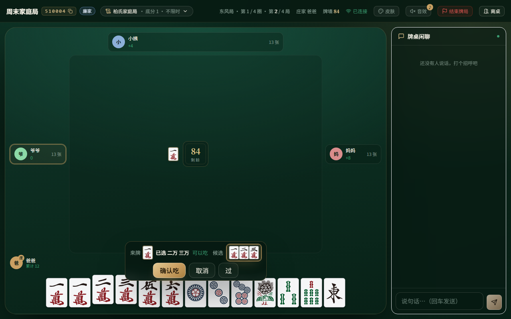
- 按钮上的「N 种」表示这副牌有几种吃法，逐一点候选就能换。
- 不想吃就点「过」，或者干脆等它过期（开了限时的情况下）。
- 吃来的牌会亮在自己座位旁，算作副露，之后不能再暗杠、也影响「门清」这类番种。
如果只有「碰」没有「吃」，动作条会直接写明原因（例如「只有下家能吃」），这是规则，不是卡住了。另外规则模板里必须允许吃，否则整桌都不会出现「吃」。
08碰与杠
碰、杠都写在同一条动作条里，按钮上会写清楚用的是哪张牌。
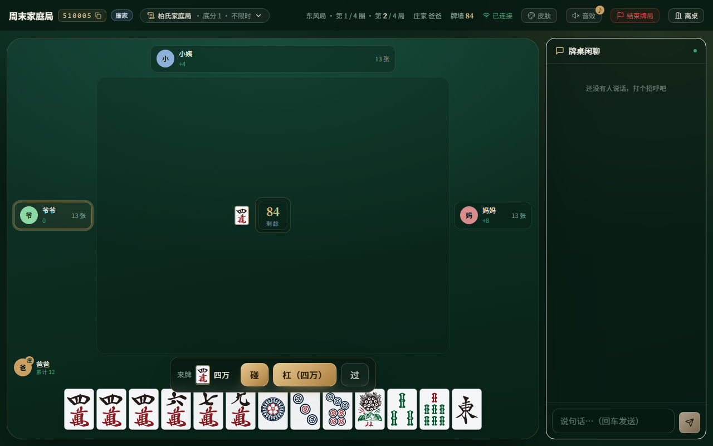
| 动作 | 条件 | 说明 |
|---|---|---|
| 碰 | 任意一家打出的牌 + 自己手里两张相同的 | 亮出三张，接着轮到自己出牌 |
| 明杠 | 别人打出的牌 + 自己手里三张相同的 | 按钮显示「杠（四万）」，杠完从牌墙补一张 |
| 暗杠 | 自己摸到第四张，手里凑齐四张 | 牌桌上只播报「某某 暗杠」，不亮牌名，别家看不到杠的是哪张 |
| 补杠 | 已经碰过的牌，自己又摸到第四张 | 补在碰的那组上，同样补一张牌；有人胡这张可抢杠 |
杠分：规则开启杠计分时（如「柏氏家庭局」：明杠 1 分、暗杠 2 分、补杠 1 分），杠分单独计算、不乘番倍数，结算页会单列一行。
别急着杠：杠完要补牌、牌型也会变，还可能点炮。不确定时先点「过」，按原计划出牌——「过」只是本次不杠，不影响下一轮。
09胡牌与结算
能胡时动作条会跳出红色的「胡」，这一局结束后立刻出结算面板，把番和分算给你看。
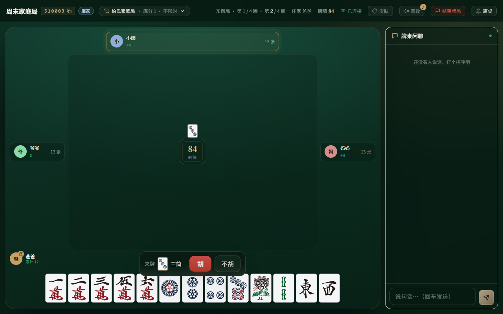
- 自摸：自己摸到的那张牌胡，三家都要付。
- 点炮：别人打出的牌胡，放炮的那一家付。
- 抢杠胡：别人补杠的那张牌正好是你要胡的，按钮会变成「抢杠胡」。
结算面板
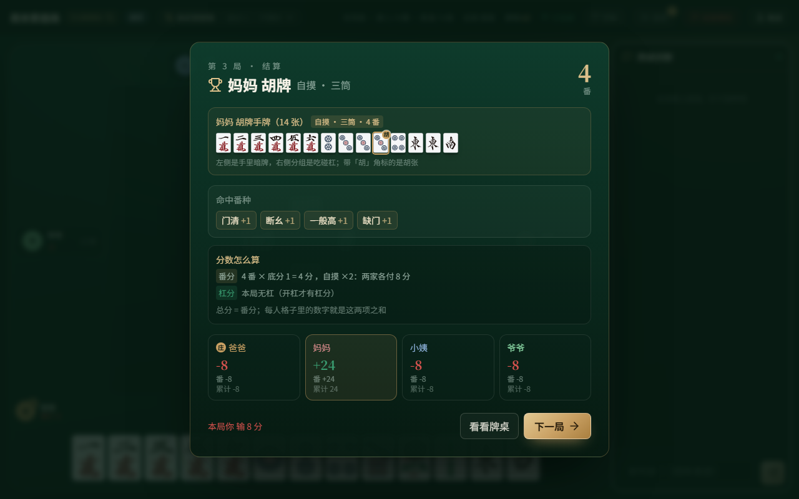
| 区块 | 内容 |
|---|---|
| 标题 | 第几局 · 结算；「某某 胡牌 自摸/点炮 · 胡张」，右侧大字是总番数 |
| 胡牌手牌 | 左边是暗牌、右边分组是吃碰杠；带金色「胡」角标的那张就是胡张 |
| 命中番种 | 门清 +1、断幺 +1、一般高 +1、缺门 +1 …… 逐条列出 |
| 分数怎么算 | 番分 = 番数 × 底分，自摸 ×2、庄家份 ×2；杠分单列、不乘倍数，最后相加 |
| 四家分数 | 本局加减分与累计分，赢家高亮；下方一句话是「本局你赢/输多少」 |
结算之后
- 下一局：接着打，庄家按规则连庄或轮转。
- 看看牌桌：关掉面板回到牌桌，顶部保留「第 N 局已结算」的小条，点它可以再看一次。
- 查看总账：最后一局结束后变成「查看总账」，进战绩页看整场明细。
中途有人要走时，房主或家庭管理员可点顶部的「结束牌局」收桌；这会把整场结束（不再继续），当前局不做结算，请注意提前打个招呼。
10手机上打牌
手机版入口是 /mjmobile/，大厅竖着看、牌桌横过来打。
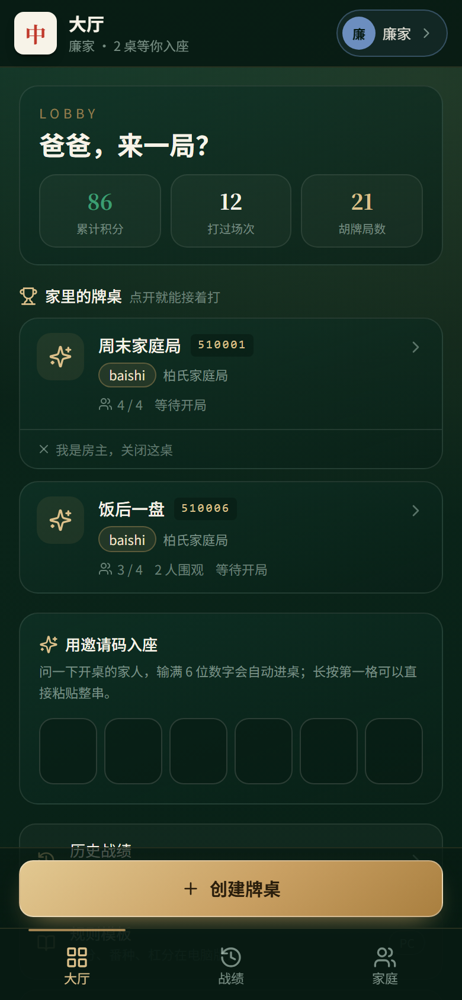
竖屏与横屏
- 大厅、登录、战绩按竖屏浏览即可。
- 进牌桌后如果手机还竖着，会弹出「把手机横过来打牌」，点「一键进入横屏」转过去，或点「先这样看」先瞄一眼。
- 横屏后才能看到完整的四家座位、手牌与吃碰杠胡按钮。
牌桌操作
- 底部一排是手牌，点左右两侧滑动查看。
- 出牌：点一张选中，再点一次打出。
- 动作条同样在底部：来牌 →「碰 / 吃 N 种 / 杠 / 胡 / 过」。
- 右上「对话气泡」是聊天，旁边的「…」里有更多（结束牌局、离桌等）。
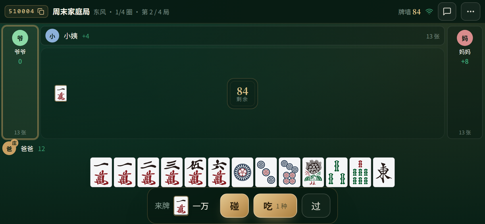
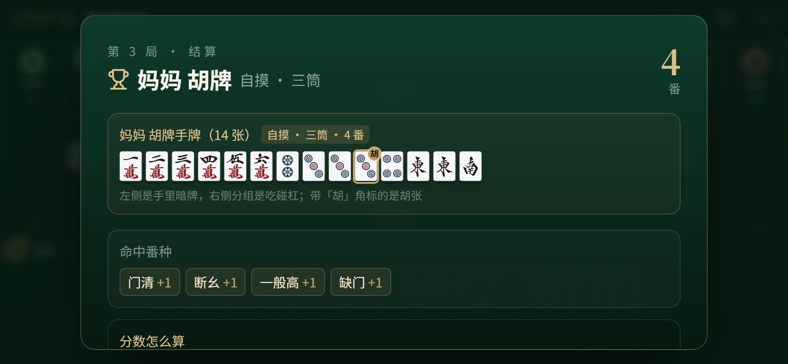
11常见问题
家里打牌最常遇到的几种情况，照着对一下。
账号相关
| 现象 | 怎么办 |
|---|---|
| 注册页显示「注册未开放」 | 自助注册被关闭了，请家庭管理员开通账号，或在家庭成员页按手机号加入 |
| 密码忘了 | 登录页点「忘记密码」，验证手机号后两步重设 |
| 提示「这个账号已经注册过了」 | 直接用这个手机号登录；真忘了密码就走找回 |
进桌与开局
| 现象 | 怎么办 |
|---|---|
| 提示「牌桌满了，围观位也满了」 | 等有人离桌再进，或让房主先收桌重开 |
| 进桌后只看到一家的牌 | 你在围观，座位已满；等有人离桌再入座 |
| 「开始牌局」是灰的 | 还没坐满 4 人，或有人没点「我准备好了」 |
| 提示这是别人家的牌桌 | 要等房主在牌桌上同意才能进，先催一下房主 |
| 手牌点不动 / 打不出去 | 没轮到你。轮到你时手牌上方会出现金色「轮到你出牌」 |
打牌中
| 现象 | 怎么办 |
|---|---|
| 能碰不能吃 | 只有下家能吃上家的牌，且规则模板要允许吃；动作条会写原因 |
| 点了「吃」没吃成 | 吃要选牌：点候选组合或手牌里点两张，再按「确认吃」 |
| 别人暗杠看不到牌名 | 这是刻意的：暗杠只播报「某某 暗杠」，不亮牌 |
| 分数看着不对 | 结算面板「分数怎么算」把番分、倍数、杠分逐项写开了；总账在「战绩」里可对 |
| 顶部显示「已连接」变红 / 掉线 | 网络抖动，刷新页面会自动重连并恢复牌桌状态，牌局不会因此作废 |
| 想中途收桌 | 房主或家庭管理员在牌桌顶部点「结束牌局」，二次确认后收桌 |
页面像旧版：登录页底部的版本号如果不是
v1.1.5，按 Ctrl + F5（手机：下拉刷新或清缓存）强制刷新一次。